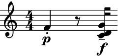
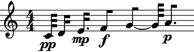
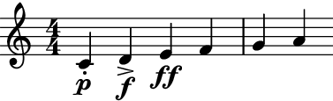
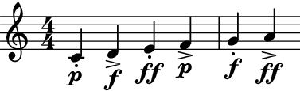
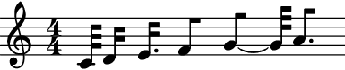
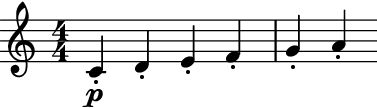
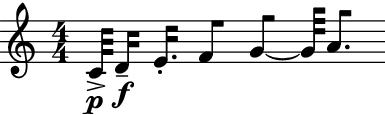

auxjad.LeafDynMaker¶
-
class
auxjad.LeafDynMaker¶ This class creates leaves and logical ties from input lists of pitches durations, dynamics, and articulations. It is an extension of
abjad.LeafMakerwhich can take optional lists of dynamics and articulations.- Example:
Usage is similar to
abjad.LeafMaker:>>> pitches = [0, 2, 4, 5, 7, 9] >>> durations = [(1, 32), (2, 32), (3, 32), (4, 32), (5, 32), (6, 32)] >>> dynamics = ['pp', 'p', 'mp', 'mf', 'f', 'ff'] >>> articulations = ['.', '>', '-', '_', '^', '+'] >>> leaf_dyn_maker = auxjad.LeafDynMaker() >>> notes = leaf_dyn_maker(pitches, durations, dynamics, articulations) >>> staff = abjad.Staff(notes) >>> abjad.f(staff) \new Staff { c'32 \pp -\staccato d'16 \p -\accent e'16. \mp -\tenuto f'8 \mf -\portato g'8 \f -\marcato ~ g'32 a'8. \ff -\stopped }
- Example:
Tuple elements in
pitchesresult in chords. None-valued elements inpitchesresult in rests:>>> pitches = [5, None, (0, 2, 7)] >>> durations = [(1, 4), (1, 8), (1, 16)] >>> dynamics = ['p', None, 'f'] >>> articulations = ['staccato', None, 'tenuto'] >>> leaf_dyn_maker = auxjad.LeafDynMaker() >>> notes = leaf_dyn_maker(pitches, durations, dynamics, articulations) >>> staff = abjad.Staff(notes) >>> abjad.f(staff) \new Staff { f'4 \p -\staccato r8 <c' d' g'>16 \f -\tenuto }
- Example:
Can omit repeated dynamics with the keyword argument
omit_repeated_dynamics:>>> pitches = [0, 2, 4, 5, 7, 9] >>> durations = [(1, 32), (2, 32), (3, 32), (4, 32), (5, 32), (6, 32)] >>> dynamics = ['pp', 'pp', 'mp', 'f', 'f', 'p'] >>> leaf_dyn_maker = auxjad.LeafDynMaker() >>> notes = leaf_dyn_maker(pitches, ... durations, ... dynamics, ... omit_repeated_dynamics=True, ... ) >>> staff = abjad.Staff(notes) >>> abjad.f(staff) \new Staff { c'32 \pp d'16 e'16. \mp f'8 \f g'8 ~ g'32 a'8. \p }
- Example:
The lengths
dynamicsandarticulationscan be shorter than the lengths ofpitchesanddurations(whatever is the greatest):>>> pitches = [0, 2, 4, 5, 7, 9] >>> durations = (1, 4) >>> dynamics = ['p', 'f', 'ff'] >>> articulations = ['.', '>'] >>> leaf_dyn_maker = auxjad.LeafDynMaker() >>> notes = leaf_dyn_maker(pitches, durations, dynamics, articulations) >>> staff = abjad.Staff(notes) >>> abjad.f(staff) \new Staff { c'4 \p -\staccato d'4 \f -\accent e'4 \ff f'4 g'4 a'4 }
- Example:
If the lengths of either
dynamicsandarticulationsare shorter than the lengths ofpitchesanddurations(whatever is the greatest), use the optional keyword argumentscyclic_dynamicsandcyclic_articulationsto apply those parameters cyclically:>>> pitches = [0, 2, 4, 5, 7, 9] >>> durations = (1, 4) >>> dynamics = ['p', 'f', 'ff'] >>> articulations = ['.', '>'] >>> leaf_dyn_maker = auxjad.LeafDynMaker() >>> notes = leaf_dyn_maker(pitches, ... durations, ... dynamics, ... articulations, ... cyclic_dynamics=True, ... cyclic_articulations=True, ... ) >>> staff = abjad.Staff(notes) >>> abjad.f(staff) \new Staff { c'4 \p - \staccato d'4 \f - \accent e'4 \ff - \staccato f'4 \p - \accent g'4 \f - \staccato a'4 \ff - \accent }
- Example:
If the length of
articulationsordynamicsis 1, they will be applied only to the first element.>>> pitches = [0, 2, 4, 5, 7, 9] >>> durations = (1, 4) >>> dynamics = 'p' >>> articulations = '.' >>> leaf_dyn_maker = auxjad.LeafDynMaker() >>> notes = leaf_dyn_maker(pitches, durations, dynamics, articulations) >>> staff = abjad.Staff(notes) >>> abjad.f(staff) \new Staff { c'4 \p -\staccato d'4 e'4 f'4 g'4 a'4 }
- Example:
To apply them to all elements, use the
cyclic_dynamicsandcyclic_articulationsoptioanl keywords.>>> pitches = [0, 2, 4, 5, 7, 9] >>> durations = (1, 4) >>> dynamics = 'p' >>> articulations = '.' >>> leaf_dyn_maker = auxjad.LeafDynMaker() >>> notes = leaf_dyn_maker(pitches, ... durations, ... dynamics, ... articulations, ... cyclic_articulations=True, ... ) >>> staff = abjad.Staff(notes) >>> abjad.f(staff) \new Staff { c'4 \p -\staccato d'4 -\staccato e'4 -\staccato f'4 -\staccato g'4 -\staccato a'4 -\staccato }
- Example:
Similarly to Abjad’s native classes, it accepts many types of elements in its input lists:
>>> pitches = [0, ... "d'", ... 'E4', ... abjad.NumberedPitch(5), ... abjad.NamedPitch("g'"), ... abjad.NamedPitch("A4"), ... ] >>> durations = [(1, 32), ... "2/32", ... abjad.Duration("3/32"), ... abjad.Duration(0.125), ... abjad.Duration(5, 32), ... abjad.Duration(6 / 32), ... ] >>> dynamics = ['p', ... abjad.Dynamic('f'), ... ] >>> articulations = ['>', ... abjad.Articulation('-'), ... abjad.Staccato(), ... ] >>> leaf_dyn_maker = auxjad.LeafDynMaker() >>> notes = leaf_dyn_maker(pitches, durations, dynamics, articulations) >>> staff = abjad.Staff(notes) >>> abjad.f(staff) \new Staff { c'32 \p - \accent d'16 \f - \tenuto e'16. \staccato f'8 g'8 ~ g'32 a'8. }

Methods
__call__(pitches, durations[, dynamics, …])Calls the leaf-maker on
pitches,durations,dynamics, andarticulations, returning anabjad.Selection.__init__()Initialises self.
__repr__()Return repr(self).
Attributes
forbidden_note_durationGets forbidden written duration.
forbidden_rest_durationGets forbidden written duration.
increase_monotonicIs true when durations increase monotonically.
skips_instead_of_restsIs true when skips appear in place of rests.
tagGets tag.
use_multimeasure_restsIs true when rests are multimeasure.